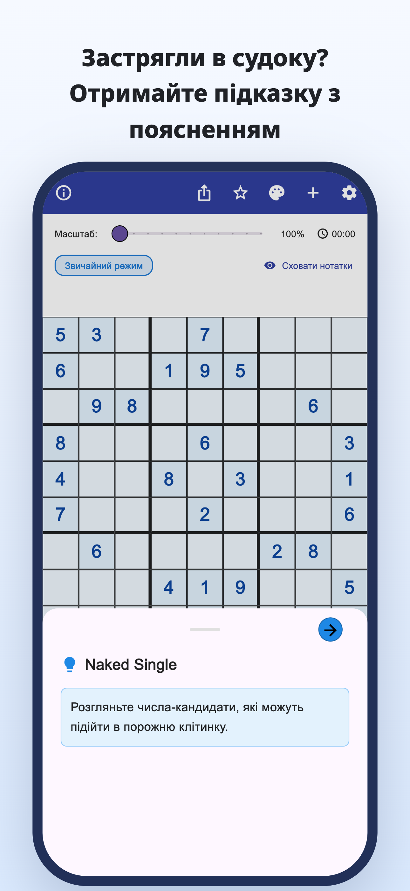
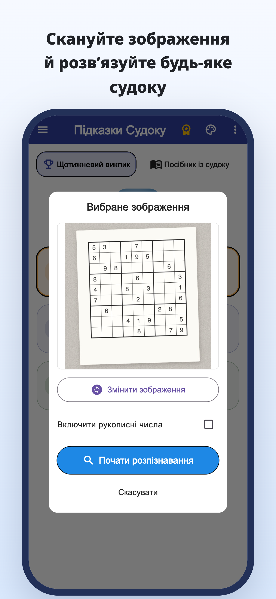
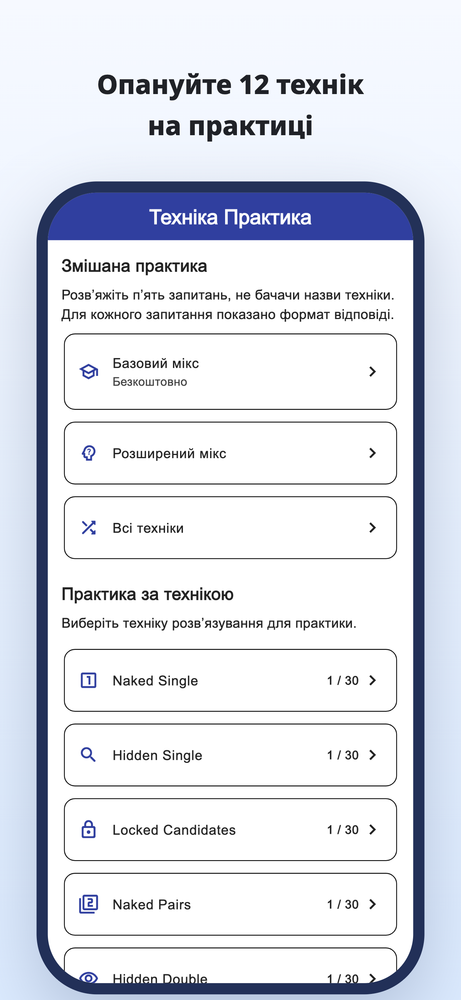
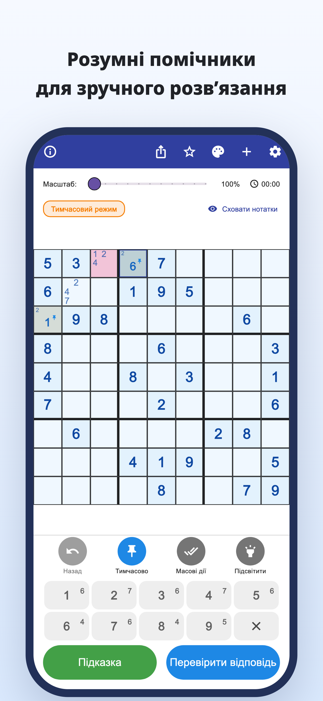
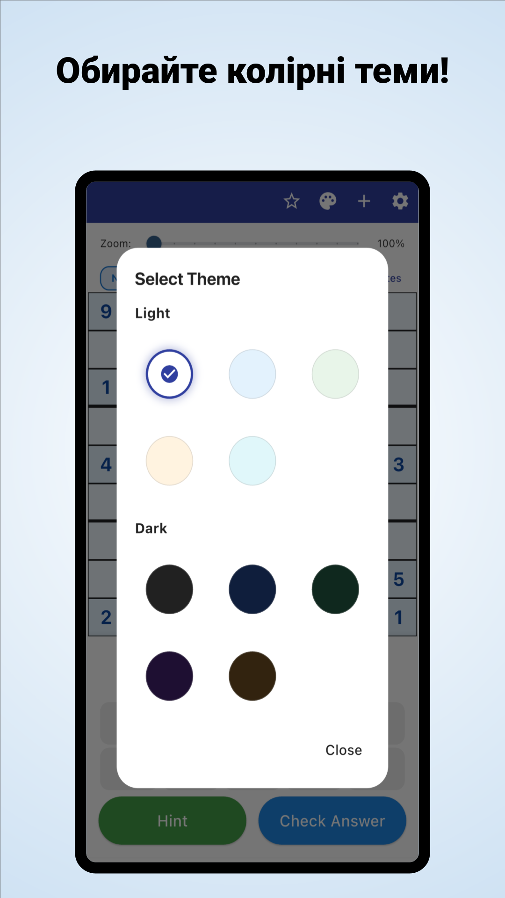

«Куди дивитися далі?»
Ви знову й знову перевіряєте сітку,
але досі стоїте на тому самому місці.
Сканування камерою · Підказки з поясненням
Скануйте судоку з газет і журналів.
Зрозумійте, чому підходить цифра, і розв’язуйте далі самостійно.
iPhone та Android / Безкоштовне завантаження · Покупки в застосунку





Вам це знайомо?
Ви знову й знову перевіряєте сітку,
але досі стоїте на тому самому місці.
Чому саме ця цифра має бути тут?
Просто переписати розв’язок недостатньо.
Хочеться взяти паперове судоку, яке розв’язуєте,
і продовжити в застосунку.
Перетворіть складний момент на зачіпку
Розпізнайте судоку з газети чи журналу за фотографією та зменште ручне введення цифр.
Розпізнавання з фотоПрочитайте обґрунтування ходу й використайте його для наступного кроку, а не просто вписуйте відповідь.
Підказки з поясненнямПереглядайте пояснення та вправи з окремих технік і тренуйтеся знаходити їх самостійно.
Вправи з технікДля тих, хто любить знаходити розв’язок самостійно
Імпортуйте звичну головоломку й продовжте з місця, де зупинилися.
Зрозумійте складне місце й рухайтеся далі самостійно.
Для початківців і тих, хто хоче вивчити ще одну техніку.
Читайте · Пробуйте · Тренуйтеся
Почніть у браузері.
Прочитайте посібник або розв’яжіть цілу головоломку.
Від нотаток кандидатів до пояснень технік і вправ.
Спробуйте розв’язати всю сітку з підказками за потреби.
Дізнайтеся правила й відчуйте задоволення від поєднання підказок.
Подивіться на клітинку в синій рамці й відкрийте підказку.
Підказка для наступного ходу
Перевірте кандидатів порожньої клітинки.
Цей вебприклад дозволяє спробувати один хід. Вигляд застосунку відрізняється.
Коли застрягли в судоку.
Завантажити Підказки Судоку
Безкоштовне завантаження · Покупки в застосунку
Застосунок можна безкоштовно завантажити й спробувати. Підказки, перевірки відповідей і сканування зображень мають обмеження; деякі дії потребують перегляду відеореклами.
Premium — місячна або річна підписка. Вона прибирає рекламу й надає необмежені підказки та перевірки відповідей. Сканування зображень залишається обмеженим і в Premium. Ціни й умови вказано в застосунку.
Імпортуйте фото судоку. Перевірте розпізнані цифри й виправте помилки перед початком. Підтримується класичне судоку 9×9.
Можна розв’язувати вбудовані головоломки та користуватися поясненнями й вправами з технік. Деякі головоломки та вправи потребують Premium.
Крім демонстрації одного ходу, у браузері можна розв’язати цілу головоломку й переглянути посібники та вправи.
Посібник із судоку